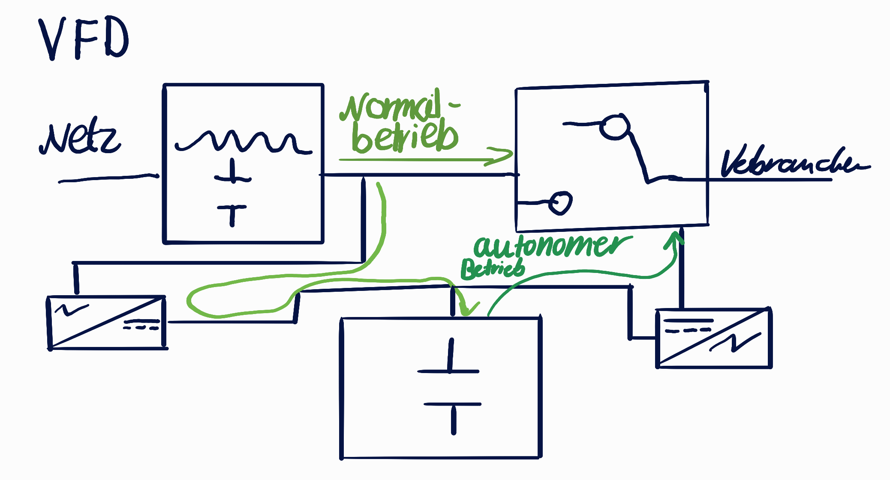
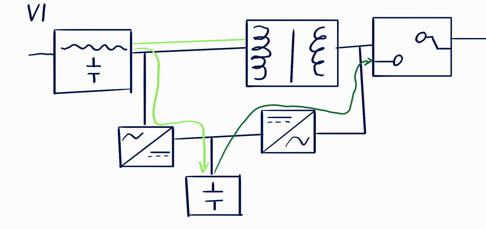
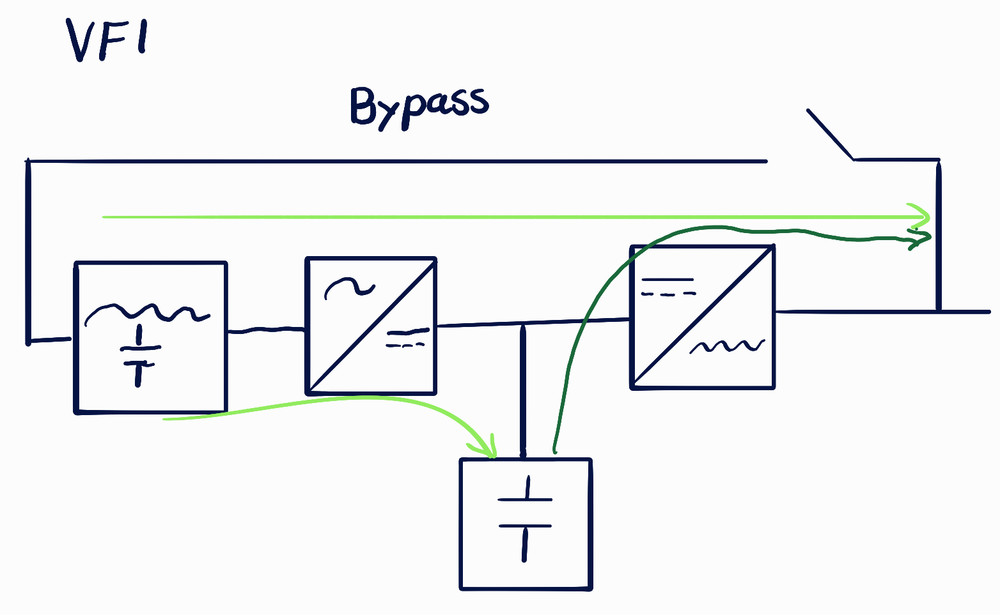

Unterbrechungsfreie Stromversorgung (USV)
Zusammenfassung der Berechnungen, Blockschaltbilder und Netzstörungen.
1. Berechnungen (aus "Übung USV.pdf")
- Leistung (P): P = U * I (Einheit: Watt, W oder VA)
- Energie/Arbeit (E oder W): E = P * t = U * I * t (Einheit: Wattstunden, Wh)
- Ladung/Kapazität (Q): Q = I * t = E / U (Einheit: Amperestunden, Ah)
- Wirkungsgrad (η): η = Nutzen / Aufwand
Aufgabe 2: Benötigte Energie
Gegeben:
P = 500 W (Server)
t = 0,5 h (30 Minuten)
Gesucht:
Mindestens benötigte Energie (E).
Rechnung:
E = P * t
E = 500 W * 0,5 h = 250 Wh
Aufgabe 3: Ladung mit Wirkungsgrad
Gegeben:
E_Nutzen = 250 Wh (Aufg. 2)
U = 48 V
Wirkungsgrad = 80 % = 0,8
Rechnung:
1. Energiebedarf inkl. 20% Verlust:
E_Akku = 250 Wh / 0,8 = 312,5 Wh
2. Ladungsmenge:
Q = E_Akku / U = 312,5 Wh / 48 V ≈ 6,51 Ah
Aufgabe 4: Akkustand und Laufzeit
Gegeben: Gesamtkapazität = 750 Wh, Aktuell = 20 %, Neue Laufzeit t = 0,75 h (45 Min), P = 500 W.
Rechnung (mit 80% Wirkungsgrad aus Aufg. 3):
1. Benötigte Nutz-Energie: E = 500 W * 0,75 h = 375 Wh
2. Energie aus Akku (Verlust berechnet): 375 Wh / 0,8 = 468,75 Wh
3. Ziel-Akkustand in %: (468,75 Wh / 750 Wh) * 100 = 62,5 %
4. Es muss aufgeladen werden um: 62,5 % - 20 % = 42,5 %
2. USV-Arten & Einsatzgebiete
Ordne die Schaltpläne den folgenden drei Kategorien zu und merke dir die typischen Anwendungsfälle:
1. VFD (Offline / Standby USV)
Auf dem Übungsblatt abgebildet
Komponenten (Aufgabe 1):
- Filter: Glättet kleine Spannungsspitzen im Normalbetrieb.
- 1. Gleichrichter: Wandelt Wechselstrom in Gleichstrom, um Batterie zu laden.
- 2. Batterie: Speichert Energie als Gleichstrom.
- 3. Wechselrichter: Wandelt Gleichstrom der Batterie in 230V Wechselstrom.
- Umschalter: Wechselt bei Stromausfall auf den Wechselrichter (wenige Millisekunden Dauer).
2. VI (Line-Interactive USV)

Erkennungsmerkmal: Besitzt einen AVR (Spannungsregler / Trafo), der Spannungsschwankungen ausgleicht, ohne auf die Batterie zurückzugreifen.
3. VFI (Online / Dauerwandler)

Erkennungsmerkmal: Der Strom fließt immer durch Gleichrichter, Batterie und Wechselrichter (Doppelwandlung). Kein Umschalter! Umschaltzeit bei Ausfall: 0 ms.
3. Die 10 Netzstörungen und USV-Abdeckung
Hier siehst du, welche der 3 USV-Klassen bei welchen Netzstörungen schützt, basierend auf deinen Unterrichtsnotizen.
| Art der Störung | Dauer / Auftreten | VFD | VI | VFI |
|---|---|---|---|---|
| 1. Netzausfälle | > 10 ms | ✅ | ✅ | ✅ |
| 2. Spannungseinbrüche | < 16 ms | ✅ | ✅ | ✅ |
| 3. Spannungsstöße | < 16 ms | ✅ | ✅ | ✅ |
| 4. Unterspannung | kontinuierlich | ❌ | ✅ | ✅ |
| 5. Überspannung | kontinuierlich | ❌ | ✅ | ✅ |
| 6. Blitzeinwirkung | sporadisch | ❌ | ❌ | ✅ |
| 7. Spannungsspitzen | < 4 ms | ❌ | ❌ | ✅ |
| 8. Frequenzschwankungen | sporadisch | ❌ | ❌ | ✅ |
| 9. Spannungsverzerrungen | periodisch | ❌ | ❌ | ✅ |
| 10. Oberschwingungen | kontinuierlich | ❌ | ❌ | ✅ |
VFD: Deckt nur Störung 1 bis 3 ab.
VI: Deckt Störung 1 bis 5 ab.
VFI: Deckt als einzige alle Störungen (1 bis 10) ab.